Visualized Linear Algebra to Get Started with Machine Learning: Part 1
Master elements of linear algebra, start with simple and visual explanations of basic concepts.
September 27, 2024 · Linear Algebra
Often the main difficulty one faces when one wants to begin one’s journey into the world of machine learning is having to understand math concepts. Sometimes this can be difficult if you do not have a solid background in subjects such as linear algebra, statistics, probability, optimization theory, or others. 🤔💭🔢✖️🧮
In this article then, I would like to start by giving intuitive explanations of basic linear algebra concepts that are essential before delving into the world of Machine Learning. Obviously, this article is not meant to be exhaustive there is a lot to know about this subject, but maybe it can be a first approach to tackling this subject!
- Introduction
- What is a vector?
- Simple Vector Operations
- Projections
- Basis, Vector Space and Linear Indipendence
- Matrices and Solving Equations
Introduction
Why Linear Algebra is important for Data Science?
Linear algebra allows us to solve real-life problems, especially problems that are very common in data science.
Assume we go to the market to buy 3 avocados, and 4 broccoli and pay 8. The next day we buy 11 avocados and 2 broccoli and pay12.
Now we want to find out how much a single avocado and a single broccoli cost. We have to solve the following expressions simultaneously.
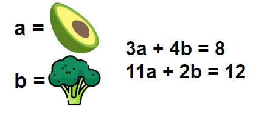
Another typical problem is to find the best parameters of a function for it to fit the data we have collected. So suppose we already know what kind of function we need to use, but this function can change its form since it depends on some parameters. We want to find the best form and therefore the best parameters.
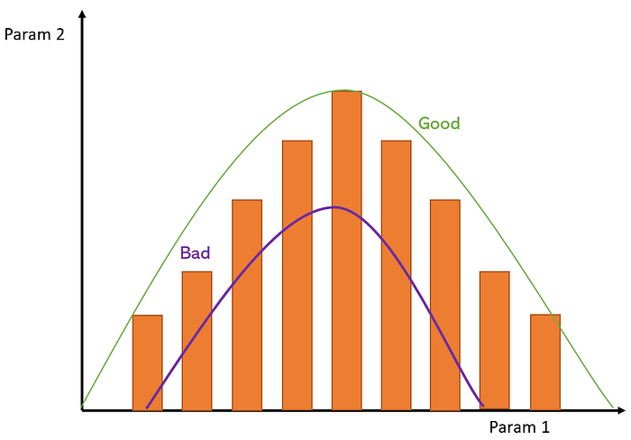
Let’s for example call µ = param1 and θ = param2.
Usually, in Machine Learning, we want to iteratively update bot [µ, θ] to find at the end some good curve that fits our data.
Let’s say that a curve far away from the optimal green curve has a high error, while a curve similar to the green one has a low error. We usually say that we want to find those parameters [µ, θ] in order to minimize the error, so find the curve which is as closest as possible to the green one.
Let’s see how linear algebra can help us with these problems!
What is a vector?
A vector in physics is a mathematical entity that has a direction a sign and a magnitude. So it is commonly represented visually with an arrow.
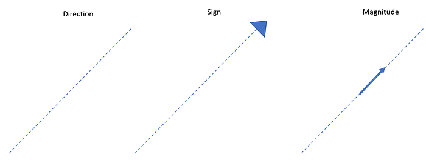
Often in computer science, the concept of vector is generalized. In fact, you will hear many times the term list instead of vector. In this conception, the vector is nothing more than a list of properties that we can use to represent anything.
Suppose we want to represent houses according to 3 of their properties:
- The number of rooms
- The number of bathrooms
- Square meters
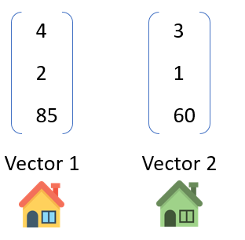
For example, in the image above we have two vectors. The first represents a house with 4 bedrooms, 2 bathrooms and 85 square meters. The second, on the other hand, represents a house with 3 rooms, 1 bathroom and 60 square meters.
Of course, if we are interested in other properties of the house we can create a much longer vector. In this case, we will say that the vector instead of having 3 dimensions will have n dimensions. In machine learning, we can often have hundreds or thousands of dimensions!
Simple Vector Operations
There are operations we can perform with vectors, the simplest of which are certainly addition between two vectors, and multiplication of a vector by a scalar (i.e., a simple number).
To add 2 vectors you can use the parallelogram rule. That is, you draw vectors parallel to those we want to add and then draw the diagonal. The diagonal will be the resulting vector of the addition. Believe me, it is much easier to understand this by looking directly at the following example.
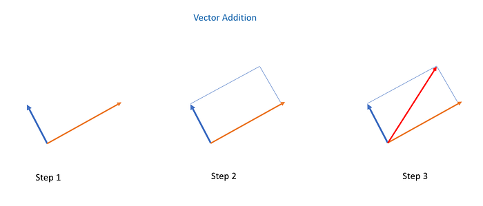
While multiplication by a scalar stretches the vector by n units. See the following example.
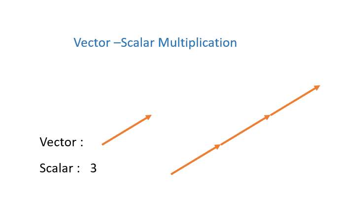
Modulus and Inner Product
A vector is actually always expressed in terms of other vectors. For example, let us take as reference vectors, two vectors i and j both with length 1 and orthogonal to each other.
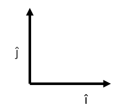
Now we define a new vector r, which starts from the origin, that is, from the point where i and j meet, and which is a times longer than i, and b times longer than j.
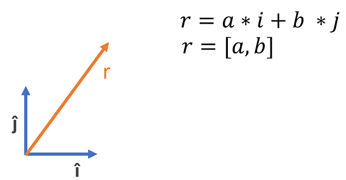
More commonly we refer to a vector using its coordinates r = [a,b], in this way we can identify various vectors in a vector space.
Now we are ready to define a new operation, the modulus of a vector, that is, its length can be derived from its coordinates and is defined as follows.
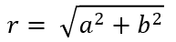
The Inner Product on the other hand is another operation with which given two vectors, it multiplies all their components and returns the sum.
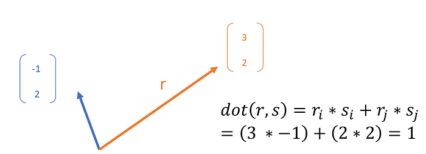
The inner product has some properties that may be useful in some cases :
- commutative: rs = sr
- distributive over addition: r(st) = rs + rt
- associative over scalar multiplication: r(as) = a(rs) where a is a scalar
Notice that if you compute the inner product of a vector per itself, you will get its modulus squared!
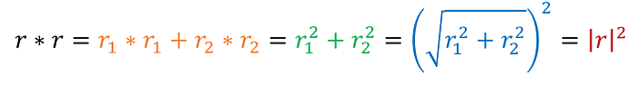
Cosine (dot) Product
So far we have only seen a mathematical definition of the inner product based on the coordinates of vectors. Now let us see a geometric interpretation of it. Let us create 3 vectors r, s and their difference r-s, so as to form a triangle with 3 sides a,b,c.
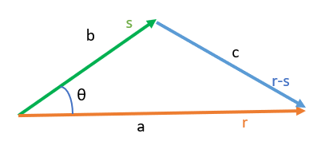
We know from our high school days that we can derive c using a simple rule of trigonometry.
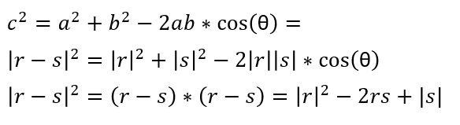
But then we can derive from the above that:
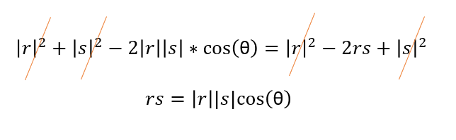
So the comprised angle has a strong effect on the result of this operation. In fact in some special cases where the angle is 0°, 90°, and 180° we will have that the cosine will be 0,1,-1 respectively. And so we will have special effects on this operation. So for example, 2 vectors that are 90 degrees to each other will always have a dot product = 0.
Projection
Let’s consider two vectors r and s. These two vectors are close to each other from one side and make an angle θ in between them. Let’s put a torch on top of s, and we’ll see a shadow of s on r. That’s the projection of s on r.
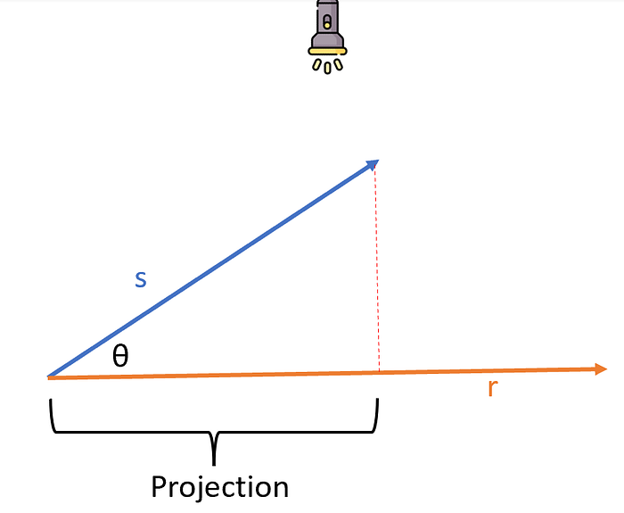
There are 2 basics projection operations:
- Scalar Projection: gives us the magnitude of the projection
- Vector Projections: gives us the projection vector itself
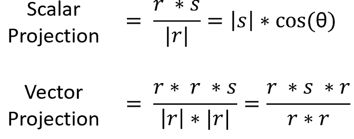
Changing Basis
Changing basis in linear algebra refers to the process of expressing a vector in a different set of coordinates, called a basis. A basis is a set of linearly independent vectors that can be used to express any vector in a vector space. When a vector is expressed on a different basis, its coordinates change.
We have seen, for example, that in two dimensions each vector can be represented as a sum of two basis vectors [0,1] and [1,0]. These two vectors are the basis of our space. But can we use two other vectors as the basis and not just these two? Certainly but in this case the coordinates of each vector in our space will change. Let’s see how.
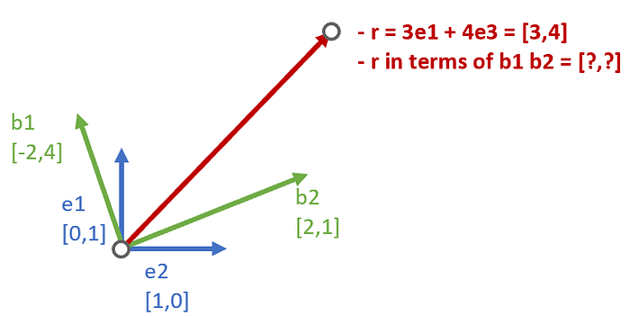
In the image above, I have two bases. The base (e1, e2), and the base (b1,b2). In addition, I have a vector r (in red). This vector has coordinates [3,4] when expressed in terms of (e1,e2) which is the base we’ve always used by default. But how do its coordinates become when expressed in terms of (b1,b2)?
To find these coordinates we need to go by steps. First, we need to find the projections of the vector r onto the vectors of the new base (b1,b2).
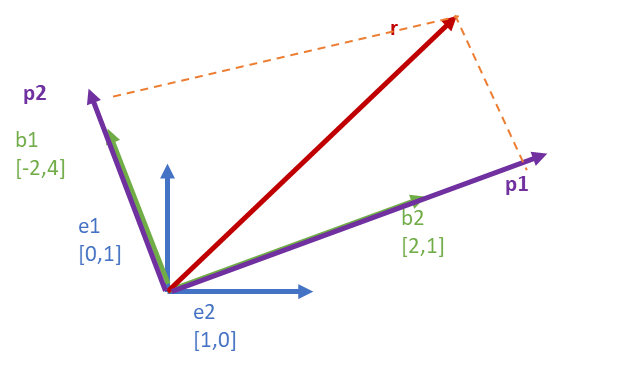
It’s easy to see that the sum of these projections we created is just r.
r = p1 + p2.
Furthermore, in order to change the basis, I have to check that the new basis is also orthogonal, meaning that the vectors are at 90 degrees to each other, so they can define the whole space.
To check this just see if the cosine of the angle is 0 which means an angle of 90 degrees.
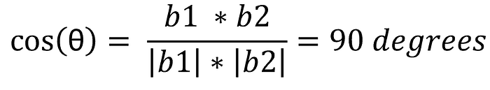
Now we go on to calculate the vector projections of r on the vectors (b1,b2), with the formula we saw in the previous chapter.
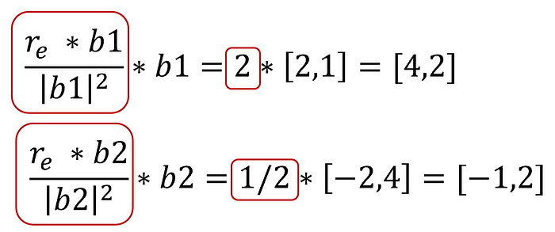
The value circled in red in the vector projection will give us the coordinate of the new vector r expressed in base b : (b1,b2) instead of e : (e1,e2).
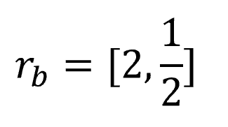
To check that the calculations are right we need to check that the sum of the projections is just r in base e:(e1,e2).
[4,2] + [-1,2] = [3,4]
Basis, Vector Space and Linear Indipendence
We have already seen and talked about basis. But let’s define more precisely what a vector basis is in a vector space.
A basis is a set of n vectors that:
- are not linear combinations of each other (linearly independent)
- span the space: the space is n-dimensional
The first point means that if, for example, I have 3 vectors a,b,c forming a basis, that means there is no way to add these vectors together and multiply them by scalars and get zero!
If I denote by x y and z any three scalars (two numbers), it means that :
xa + yb +zc != 0
(obviously excluding the trivial case where x = y = z = 0). In this case, we will say that the vectors are linearly independent.
This means, for example, that there is no way to multiply by scalars and add a and b together to get c. It means that if a and b lie in space in two dimensions c lies in a third dimension instead.
While the second point means that I can multiply these vectors by scalars and sum them together to get any possible vectors in a 3-dimensional space. So these 3 basis vectors are enough for me to define the whole space of dimension n=3.
Matrices and solving simultaneous equations
By now you should be pretty good at handling vectors and doing operations with them. But what are they used for in real life? We saw in the beginning that one of our goals was to solve multiple equations together simultaneously, for example, to figure out the prices of vegetables at the supermarket.
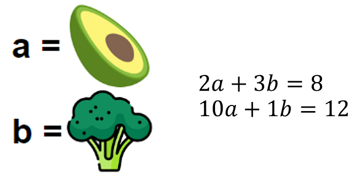
But now that we know the vectors we can rewrite these equations in a simpler way. We put the vectors of coefficients [2,10] and [3,1] next to each other in forming a matrix (set of vectors). Then we will have the vector of unknowns [a,b] and finally the result [8,3].
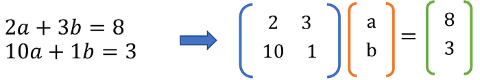
Now you may ask whether this new form of writing the problem is really better or not. How do you do multiplication between a matrix and a vector? It is very simple. Just multiply each row of the matrix by the vector. In case we had a multiplication between two matrices we would have to multiply each row of the first matrix by each column of the second matrix.
So by applying this rule rows by columns we should regain the original shape.
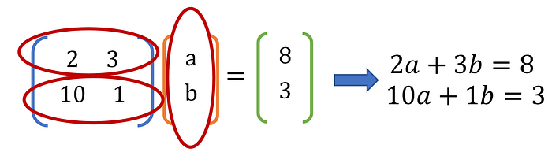
This form, however, has other advantages as well. It gives us a geometric interpretation of what is happening. Every matrix defines a transformation in space. So if I have a point in a space and I apply a matrix, my point will move in some way.
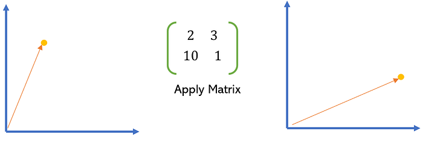
But then we can also say that a matrix is nothing more than a function that takes a point as input and generates a new one as output.
So our initial problem can be interpreted as follows, “What is the original vector [a,b] on which the transformation results in [8,3]?”
In this way, you can think about solving simultaneous equations as transformations over vectors in a vector space. Plus operations with matrices have the following properties that can be very useful.
Given A(r) = r2 where A is a matrix and r, r2 are both scalar:
- A(nr) = ns where n is a scalar
- A(r+s) = A(r) + A(s) where s is a vector
Matrices and space transformations
To understand the effects of a matrix then we can see how they transform the vectors to which they are applied. In particular, we might see what is the impact of a matrix when applied on the eigenbasis.
If we have a 2x2 matrix and we are in a space in two dimensions, the first column of the matrix will tell us what the effect will be on the vector e1 = [1,0] and the second column instead will tell us what the effect will be on the vector e1 = [0,2].
We then see the effect of some known matrices. These transformations are often useful in Machine Learning for data augmentation on images, you can stretch or shrink those images for example.
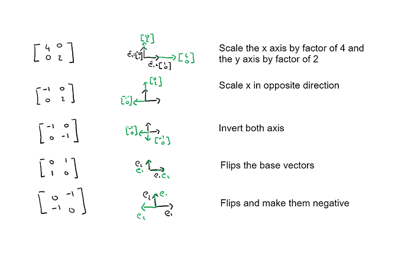
We can also apply multiple consecutive transformations to a vector. So if we have two transformations represented by the matrices A1 and A2 we can apply them consecutively A2(A1(vector)).
But this is different from applying them inversely i.e. A1(A2(vector)). That is why the product between matrices does not enjoy the commutative property.
Final Thoughts
In this first part of my articles on linear algebra, you should have understood why this subject is so important for Machine Learning and perhaps you have learned basic concepts quickly and intuitively.
You know what a vector and a matrix are, how to represent these entities in a vector space and how to do operations with these elements. Follow along so you don’t miss the continuation of this article! 😊
The End
Marcello Politi
This article was published on Towards Data Science